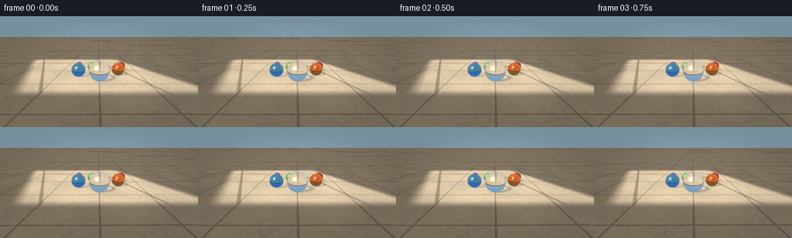
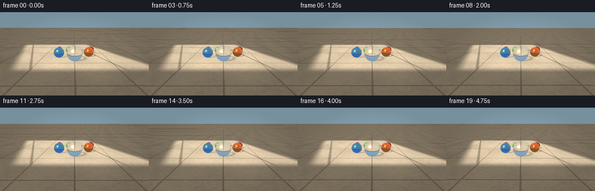
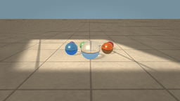
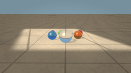
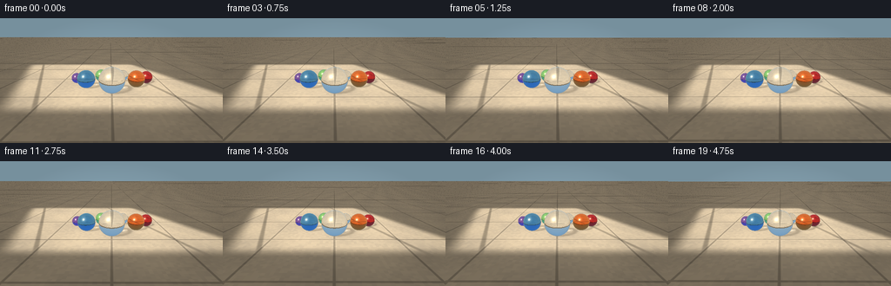

CODING AGENTS AS PIXEL WORLD MODELS
traex/GPT-5.6-Sol · phygen_078
点击播放 · 原生 RGB 像素
逐轮保存的候选
回放视频、检查图与代码变化。
每份候选均可单独播放。实际图片检查记录在下方工具轨迹中。
候选 01播放与检查图
点击播放 · 原生 RGB 像素


展开代码变化
--- 上一保存版本
+++ 本次保存版本
@@ -0,0 +1,280 @@
+from pathlib import Path
+import math
+import numpy as np
+from PIL import Image
+import artifact_io
+
+# Procedural text-to-video renderer for: "Several glass marbles are placed on a floor under the sunlight."
+# Everything is deterministic and generated from mathematical geometry.
+W, H, N, FPS = 256, 144, 20, 4.0
+SS = 2
+RW, RH = W * SS, H * SS
+CASE_DIR = Path(__file__).resolve().parent
+
+# x, y, radius, transmission tint, absorption strength
+MARBLES = [
+ ( 0.02, 1.52, 0.64, (0.91, 0.97, 1.00), 0.035), # large clear marble
+ (-1.42, 2.48, 0.48, (0.35, 0.74, 0.98), 0.40), # sapphire blue
+ ( 1.36, 2.76, 0.46, (1.00, 0.64, 0.22), 0.43), # amber
+ (-0.55, 4.08, 0.37, (0.63, 0.97, 0.67), 0.32), # pale green
+ ( 0.63, 4.52, 0.34, (0.94, 0.98, 1.00), 0.055), # small clear
+ ( 1.79, 4.20, 0.36, (0.93, 0.25, 0.30), 0.48), # ruby
+ (-1.72, 4.88, 0.30, (0.62, 0.43, 0.94), 0.36), # violet, distant
+]
+
+SUN = np.array([-0.48, -0.58, 0.66], np.float64)
+SUN /= np.linalg.norm(SUN)
+
+
+def normalize(v):
+ return v / np.maximum(np.linalg.norm(v, axis=-1, keepdims=True), 1e-9)
+
+
+def smoothstep(a, b, x):
+ q = np.clip((x-a)/(b-a), 0.0, 1.0)
+ return q*q*(3.0-2.0*q)
+
+
+def hash2(x, y):
+ # Stable continuous-looking stone flecks in world space.
+ return np.mod(np.sin(x*127.1 + y*311.7)*43758.5453123, 1.0)
+
+
+def floor_texture(x, y, include_shadows=True):
+ """Warm limestone tiles lit by a low directional sun."""
+ # Natural multiscale stone variation fixed to the floor.
+ n1 = np.sin(1.37*x + 0.61*y) * np.sin(0.43*x - 1.13*y)
+ n2 = np.sin(5.7*x + 3.1*y) * 0.35 + np.sin(12.2*x - 7.7*y) * 0.13
+ fleck = (hash2(np.floor(x*8.0), np.floor(y*8.0)) - 0.5) * 0.045
+ stone = n1*0.030 + n2*0.012 + fleck
+
+ base = np.stack((0.76 + stone, 0.704 + stone*0.88, 0.607 + stone*0.63), axis=-1)
+
+ # Broad diagonal patch of sunlight. The feathered borders evoke a nearby window.
+ u = x + 0.38*y
+ patch = smoothstep(-4.7, -3.7, u) * (1.0-smoothstep(5.25, 6.15, u))
+ patch *= smoothstep(-0.8, 0.2, y) * (1.0-smoothstep(8.9, 10.2, y))
+ illumination = 0.62 + 0.52*patch
+
+ # Soft shadow lines from a window frame, crossing the sunny floor.
+ bar1 = np.exp(-((u + 3.03)/0.115)**4)
+ bar2 = np.exp(-((u - 3.32)/0.105)**4)
+ illumination *= 1.0 - patch*(0.28*bar1 + 0.24*bar2)
+ col = base * illumination[..., None]
+
+ # Large stone tile joints, with a faint bevel/highlight on their sunward edge.
+ tx = np.abs(np.mod(x + 1.46, 2.95) - 1.475)
+ ty = np.abs(np.mod(y + 0.60, 3.12) - 1.56)
+ grout = np.maximum(1.0-smoothstep(0.025, 0.060, tx),
+ 1.0-smoothstep(0.025, 0.060, ty))
+ bevel = np.maximum(np.exp(-((tx-0.075)/0.028)**2), np.exp(-((ty-0.075)/0.028)**2))
+ col *= (1.0 - 0.23*grout[..., None])
+ col += (0.025*patch*bevel)[..., None]
+
+ if include_shadows:
+ # Glass shadows: soft partial occlusion, colored edges and bright focused caustics.
+ hdir = -SUN[:2]
+ hdir /= np.linalg.norm(hdir)
+ side = np.array([-hdir[1], hdir[0]])
+ for sx, sy, r, tint, absorb in MARBLES:
+ # Project sphere center onto floor along the incoming sunlight direction.
+ cx = sx - SUN[0]*(r/SUN[2])
+ cy = sy - SUN[1]*(r/SUN[2])
+ dx, dy = x-cx, y-cy
+ along = dx*hdir[0] + dy*hdir[1]
+ across = dx*side[0] + dy*side[1]
+ q = (across/(r*0.92))**2 + (along/(r*1.34))**2
+ body = np.exp(-2.7*q*q)
+ # Glass blocks little light in its middle but darkens at the thick edge.
+ edge = np.exp(-((np.sqrt(np.maximum(q, 0.0))-0.78)/0.23)**2)
+ opacity = (0.10*body + 0.17*edge)
+ col *= (1.0-opacity[..., None])
+
+ # Sun focusing through a sphere produces a compact, directional caustic.
+ focus_along = r*0.47
+ fq = ((across/(r*0.20))**2 + ((along-focus_along)/(r*0.34))**2)
+ caustic = np.exp(-2.1*fq) + 0.44*np.exp(-((np.sqrt(np.maximum(fq, 0))-1.16)/0.18)**2)
+ tc = np.asarray(tint)
+ caustic_col = 0.72 + 0.28*tc
+ col += (0.28*caustic*patch)[..., None]*caustic_col
+
+ # Subtle colored fringe on the far edge of a colored-glass shadow.
+ fringe = np.exp(-((np.sqrt(np.maximum(q, 0))-1.02)/0.075)**2)
+ col += (0.025*fringe*patch)[..., None]*(tc-0.45)
+
+ return np.clip(col, 0.0, 1.0)
+
+
+def environment(d):
+ """Simple high-dynamic-range room/sky environment seen in reflections."""
+ z = d[..., 2]
+ # Pale blue outdoor sky above, warm floor/wall below.
+ t = np.clip(0.5 + 0.5*z, 0, 1)
+ sky_low = np.array([0.64, 0.72, 0.76])
+ sky_high = np.array([0.34, 0.58, 0.83])
+ col = sky_low + t[..., None]*(sky_high-sky_low)
+ below = z < 0
+ if np.any(below):
+ col[below] = np.array([0.58, 0.50, 0.39]) * (0.92 + 0.08*np.clip(-z[below], 0, 1))[:, None]
+
+ # Solar disc and soft halo reflected as a brilliant pinpoint.
+ sd = np.sum(d*SUN, axis=-1)
+ disc = smoothstep(0.9986, 0.99975, sd)
+ halo = np.clip((sd-0.94)/0.06, 0, 1)**10
+ col += disc[..., None]*np.array([2.8, 2.45, 1.75])
+ col += halo[..., None]*np.array([0.38, 0.30, 0.17])
+
+ # Bright rectangular window reflection, intentionally soft edged.
+ # Directions toward the left-front upper quadrant act as an area light.
+ win = smoothstep(-0.78, -0.64, d[...,0])*(1-smoothstep(-0.18, -0.03, d[...,0]))
+ win *= smoothstep(-0.74, -0.52, d[...,1])*(1-smoothstep(0.25, 0.42, d[...,1]))
+ win *= smoothstep(0.20, 0.35, d[...,2])
+ col += win[...,None]*np.array([0.78,0.72,0.58])
+ return np.clip(col, 0, 2.8)
+
+
+def refract(i, n, eta):
+ # n faces the incident medium; returns direction and validity.
+ cosi = -np.sum(i*n, axis=-1)
+ k = 1.0 - eta*eta*(1.0-cosi*cosi)
+ out = eta*i + (eta*cosi - np.sqrt(np.maximum(k, 0.0)))[...,None]*n
+ return normalize(out), k >= 0
+
+
+def render(frame_idx):
+ phase = frame_idx/(N-1)
+ # Slow, cinematic camera arc; marbles themselves remain placed and still.
+ ang = (phase-0.5)*0.075
+ cam = np.array([0.30*math.sin(ang*4.0), -6.35 + 0.10*math.cos(phase*math.pi), 2.68])
+ target = np.array([0.0, 2.70, 0.29])
+ forward = normalize((target-cam)[None,:])[0]
+ right = normalize(np.cross(forward, np.array([0.,0.,1.]))[None,:])[0]
+ up = normalize(np.cross(right, forward)[None,:])[0]
+
+ yy, xx = np.mgrid[0:RH, 0:RW]
+ # Centered deterministic subpixel grid, antialiased by 2x rendering/downsampling.
+ sx = ((xx+0.5)/RW*2.0-1.0) * (RW/RH)
+ sy = (1.0-(yy+0.5)/RH*2.0)
+ scale = math.tan(math.radians(23.2))
+ dirs = normalize(forward + sx[...,None]*scale*right + sy[...,None]*scale*up)
+ origins = np.broadcast_to(cam, dirs.shape)
+
+ # Background floor intersection.
+ plane_t = -cam[2] / np.minimum(dirs[...,2], -1e-8)
+ valid_floor = (dirs[...,2] < -1e-6) & (plane_t > 0)
+ px = cam[0] + dirs[...,0]*plane_t
+ py = cam[1] + dirs[...,1]*plane_t
+ rgb = np.empty((RH,RW,3), np.float64)
+ rgb[:] = np.array([0.48,0.61,0.70])
+ rgb[valid_floor] = floor_texture(px[valid_floor], py[valid_floor], True)
+
+ nearest = np.where(valid_floor, plane_t, 1e9)
+
+ # Render each refractive sphere, preserving whichever intersection is nearest.
+ for cx, cy, r, tint_tuple, absorb in MARBLES:
+ center = np.array([cx, cy, r])
+ oc = origins-center
+ b = np.sum(oc*dirs, axis=-1)
+ c = np.sum(oc*oc, axis=-1)-r*r
+ disc = b*b-c
+ hit = disc > 0
+ root = np.sqrt(np.maximum(disc,0))
+ tfront = -b-root
+ hit &= (tfront > 0) & (tfront < nearest)
+ if not np.any(hit):
+ continue
+
+ iy, ix = np.nonzero(hit)
+ d = dirs[iy,ix]
+ tf = tfront[iy,ix]
+ p = cam + d*tf[:,None]
+ n = normalize(p-center)
+ view = -d
+ cosv = np.clip(np.sum(n*view,axis=-1),0,1)
+
+ # Reflection from the front surface.
+ refl_d = normalize(d - 2.0*np.sum(d*n,axis=-1)[:,None]*n)
+ reflected = environment(refl_d)
+
+ # Enter glass, traverse chord, exit, then sample the actual floor hit.
+ inside_d, ok1 = refract(d,n,1.0/1.505)
+ # Find the second sphere intersection from just inside the front surface.
+ pin = p + inside_d*1e-5
+ oc2 = pin-center
+ b2 = np.sum(oc2*inside_d,axis=-1)
+ c2 = np.sum(oc2*oc2,axis=-1)-r*r
+ root2 = np.sqrt(np.maximum(b2*b2-c2,0))
+ texit = -b2 + root2
+ q = pin + inside_d*texit[:,None]
+ nout = normalize(q-center)
+ exit_d, ok2 = refract(inside_d,-nout,1.505)
+ floor_t = -q[:,2]/np.minimum(exit_d[:,2],-1e-8)
+ good = ok1 & ok2 & (exit_d[:,2] < -1e-6) & (floor_t > 0)
+ transmitted = environment(exit_d)
+ if np.any(good):
+ fp = q[good] + exit_d[good]*floor_t[good,None]
+ transmitted[good] = floor_texture(fp[:,0],fp[:,1],False)
+
+ tint = np.asarray(tint_tuple)
+ path = np.maximum(texit,0) / max(2*r,1e-6)
+ # Beer-Lambert-like selective absorption for colored glass.
+ density = absorb * path
+ attenuation = np.exp(-density[:,None]*(1.0-tint)[None,:]*5.2)
+ attenuation *= (0.965 - 0.025*density[:,None])
+ transmitted *= attenuation
+
+ # Schlick Fresnel: transparent center and highly reflective glass rim.
+ fresnel = 0.040 + 0.960*(1.0-cosv)**5
+ # A small internal reflection near the rim enriches glass depth.
+ inner = np.clip((0.43-cosv)/0.43,0,1)**2
+ glass = transmitted*(1.0-fresnel[:,None]) + reflected*fresnel[:,None]
+ glass += inner[:,None]*0.075*np.asarray(tint)
+
+ # Directional solar glint and broad area-light highlight.
+ halfv = normalize(view + SUN)
+ ndh = np.clip(np.sum(n*halfv,axis=-1),0,1)
+ spec = ndh**310 + 0.20*ndh**38
+ glass += spec[:,None]*np.array([1.65,1.45,1.08])
+
+ # Fine bright rim and contact-side grounding.
+ rim = (1.0-cosv)**12
+ glass += rim[:,None]*np.array([0.15,0.20,0.23])
+ lower = np.clip(1.0-(p[:,2]/(2*r)),0,1)
+ contact = np.exp(-((p[:,2])/(r*0.12))**2)
+ glass *= (1.0-0.22*contact[:,None])
+ glass += (0.020*lower*(1-contact))[:,None]*tint
+
+ rgb[iy,ix] = np.clip(glass,0,1)
+ nearest[iy,ix] = tf
+
+ # Gentle photographic response, vignette, and warm sunlight grade.
+ rgb = np.clip(rgb,0,1)
+ rgb = rgb**(1/1.07)
+ rr = (xx-RW/2)/(RW/2)
+ rv = (yy-RH/2)/(RH/2)
+ vignette = 1.0-0.11*np.clip(rr*rr+rv*rv,0,1)
+ rgb *= vignette[...,None]
+ rgb *= np.array([1.035,1.005,0.965])
+
+ # Downsample in linear-ish space for smooth silhouettes and highlights.
+ im = Image.fromarray(np.uint8(np.clip(rgb,0,1)*255+0.5), 'RGB')
+ im = im.resize((W,H),Image.Resampling.LANCZOS)
+ arr = np.asarray(im).copy()
+ # Tiny deterministic sensor grain prevents sterile flat regions without temporal shimmer.
+ gy,gx=np.mgrid[0:H,0:W]
+ grain=((hash2(gx,gy)-0.5)*1.4).astype(np.int16)
+ arr=np.clip(arr.astype(np.int16)+grain[...,None],0,255).astype(np.uint8)
+ return arr
+
+
+def main():
+ frames=[]
+ for i in range(N):
+ print(f"rendering frame {i+1}/{N}", flush=True)
+ frames.append(render(i))
+ frames=np.stack(frames).astype(np.uint8)
+ artifact_io.save(frames, CASE_DIR)
+ print("saved", frames.shape, "to", CASE_DIR)
+
+if __name__ == '__main__':
+ main()
候选 02播放与检查图
点击播放 · 原生 RGB 像素

展开代码变化
--- 上一保存版本
+++ 本次保存版本
@@ -14,12 +14,12 @@
# x, y, radius, transmission tint, absorption strength
MARBLES = [
( 0.02, 1.52, 0.64, (0.91, 0.97, 1.00), 0.035), # large clear marble
- (-1.42, 2.48, 0.48, (0.35, 0.74, 0.98), 0.40), # sapphire blue
- ( 1.36, 2.76, 0.46, (1.00, 0.64, 0.22), 0.43), # amber
- (-0.55, 4.08, 0.37, (0.63, 0.97, 0.67), 0.32), # pale green
- ( 0.63, 4.52, 0.34, (0.94, 0.98, 1.00), 0.055), # small clear
- ( 1.79, 4.20, 0.36, (0.93, 0.25, 0.30), 0.48), # ruby
- (-1.72, 4.88, 0.30, (0.62, 0.43, 0.94), 0.36), # violet, distant
+ (-1.34, 2.32, 0.48, (0.35, 0.74, 0.98), 0.40), # sapphire blue
+ ( 1.34, 2.44, 0.46, (1.00, 0.64, 0.22), 0.43), # amber
+ (-0.61, 3.57, 0.37, (0.63, 0.97, 0.67), 0.32), # pale green
+ ( 0.70, 3.67, 0.34, (0.94, 0.98, 1.00), 0.055), # small clear
+ ( 2.05, 3.18, 0.36, (0.93, 0.25, 0.30), 0.48), # ruby
+ (-2.04, 3.24, 0.30, (0.62, 0.43, 0.94), 0.36), # violet, distant
]
SUN = np.array([-0.48, -0.58, 0.66], np.float64)
@@ -145,8 +145,8 @@
phase = frame_idx/(N-1)
# Slow, cinematic camera arc; marbles themselves remain placed and still.
ang = (phase-0.5)*0.075
- cam = np.array([0.30*math.sin(ang*4.0), -6.35 + 0.10*math.cos(phase*math.pi), 2.68])
- target = np.array([0.0, 2.70, 0.29])
+ cam = np.array([0.30*math.sin(ang*4.0), -5.65 + 0.10*math.cos(phase*math.pi), 2.62])
+ target = np.array([0.0, 2.62, 0.31])
forward = normalize((target-cam)[None,:])[0]
right = normalize(np.cross(forward, np.array([0.,0.,1.]))[None,:])[0]
up = normalize(np.cross(right, forward)[None,:])[0]
@@ -155,7 +155,7 @@
# Centered deterministic subpixel grid, antialiased by 2x rendering/downsampling.
sx = ((xx+0.5)/RW*2.0-1.0) * (RW/RH)
sy = (1.0-(yy+0.5)/RH*2.0)
- scale = math.tan(math.radians(23.2))
+ scale = math.tan(math.radians(22.2))
dirs = normalize(forward + sx[...,None]*scale*right + sy[...,None]*scale*up)
origins = np.broadcast_to(cam, dirs.shape)
@@ -257,7 +257,7 @@
rgb *= np.array([1.035,1.005,0.965])
# Downsample in linear-ish space for smooth silhouettes and highlights.
- im = Image.fromarray(np.uint8(np.clip(rgb,0,1)*255+0.5), 'RGB')
+ im = Image.fromarray(np.uint8(np.clip(rgb,0,1)*255+0.5))
im = im.resize((W,H),Image.Resampling.LANCZOS)
arr = np.asarray(im).copy()
# Tiny deterministic sensor grain prevents sterile flat regions without temporal shimmer.
候选 03播放与检查图

可观测工具轨迹
实际执行的命令与返回图片。
命令 1exit 0
/bin/bash -lc "cat prompt.txt && printf '\\n--- GENERATION_RULES.md ---\\n' && cat GENERATION_RULES.md"
命令 2exit 0
/bin/bash -lc "cat task_spec.json && printf '\\n--- files ---\\n' && find . -maxdepth 2 -type f -printf '%p\\n' | sort"
命令 3exit 0
/bin/bash -lc "command -v ffmpeg; command -v blender; command -v python3; python3 - <<'PY'
try:
import cv2; print('cv2',cv2.__version__)
except Exception as e: print('no cv2',e)
try:
import PIL; print('PIL',PIL.__version__)
except Exception as e: print('no PIL',e)
PY"命令 4exit 0
/bin/bash -lc 'cat artifact_io.py'
命令 5exit 0
/bin/bash -lc "cat > generate.py <<'PY'
from pathlib import Path
import math
import numpy as np
from PIL import Image
import artifact_io
# Procedural text-to-video renderer for: \"Several glass marbles are placed on a floor under the sunlight.\"
# Everything is deterministic and generated from mathematical geometry.
W, H, N, FPS = 256, 144, 20, 4.0
SS = 2
RW, RH = W * SS, H * SS
CASE_DIR = Path(__file__).resolve().parent
# x, y, radius, transmission tint, absorption strength
MARBLES = [
( 0.02, 1.52, 0.64, (0.91, 0.97, 1.00), 0.035), # large clear marble
(-1.42, 2.48, 0.48, (0.35, 0.74, 0.98), 0.40), # sapphire blue
( 1.36, 2.76, 0.46, (1.00, 0.64, 0.22), 0.43), # amber
(-0.55, 4.08, 0.37, (0.63, 0.97, 0.67), 0.32), # pale green
( 0.63, 4.52, 0.34, (0.94, 0.98, 1.00), 0.055), # small clear
( 1.79, 4.20, 0.36, (0.93, 0.25, 0.30), 0.48), # ruby
(-1.72, 4.88, 0.30, (0.62, 0.43, 0.94), 0.36), # violet, distant
]
SUN = np.array([-0.48, -0.58, 0.66], np.float64)
SUN /= np.linalg.norm(SUN)
def normalize(v):
return v / np.maximum(np.linalg.norm(v, axis=-1, keepdims=True), 1e-9)
def smoothstep(a, b, x):
q = np.clip((x-a)/(b-a), 0.0, 1.0)
return q*q*(3.0-2.0*q)
def hash2(x, y):
# Stable continuous-looking stone flecks in world space.
return np.mod(np.sin(x*127.1 + y*311.7)*43758.5453123, 1.0)
def floor_texture(x, y, include_shadows=True):
\"\"\"Warm limestone tiles lit by a low directional sun.\"\"\"
# Natural multiscale stone variation fixed to the floor.
n1 = np.sin(1.37*x + 0.61*y) * np.sin(0.43*x - 1.13*y)
n2 = np.sin(5.7*x + 3.1*y) * 0.35 + np.sin(12.2*x - 7.7*y) * 0.13
fleck = (hash2(np.floor(x*8.0), np.floor(y*8.0)) - 0.5) * 0.045
stone = n1*0.030 + n2*0.012 + fleck
base = np.stack((0.76 + stone, 0.704 + stone*0.88, 0.607 + stone*0.63), axis=-1)
# Broad diagonal patch of sunlight. The feathered borders evoke a nearby window.
u = x + 0.38*y
patch = smoothstep(-4.7, -3.7, u) * (1.0-smoothstep(5.25, 6.15, u))
patch *= smoothstep(-0.8, 0.2, y) * (1.0-smoothstep(8.9, 10.2, y))
illumination = 0.62 + 0.52*patch
# Soft shadow lines from a window frame, crossing the sunny floor.
bar1 = np.exp(-((u + 3.03)/0.115)**4)
bar2 = np.exp(-((u - 3.32)/0.105)**4)
illumination *= 1.0 - patch*(0.28*bar1 + 0.24*bar2)
col = base * illumination[..., None]
# Large stone tile joints, with a faint bevel/highlight on their sunward edge.
tx = np.abs(np.mod(x + 1.46, 2.95) - 1.475)
ty = np.abs(np.mod(y + 0.60, 3.12) - 1.56)
grout = np.maximum(1.0-smoothstep(0.025, 0.060, tx),
1.0-smoothstep(0.025, 0.060, ty))
bevel = np.maximum(np.exp(-((tx-0.075)/0.028)**2), np.exp(-((ty-0.075)/0.028)**2))
col *= (1.0 - 0.23*grout[..., None])
col += (0.025*patch*bevel)[..., None]
if include_shadows:
# Glass shadows: soft partial occlusion, colored edges and bright focused caustics.
hdir = -SUN[:2]
hdir /= np.linalg.norm(hdir)
side = np.array([-hdir[1], hdir[0]])
for sx, sy, r, tint, absorb in MARBLES:
# Project sphere center onto floor along the incoming sunlight direction.
cx = sx - SUN[0]*(r/SUN[2])
cy = sy - SUN[1]*(r/SUN[2])
dx, dy = x-cx, y-cy
along = dx*hdir[0] + dy*hdir[1]
across = dx*side[0] + dy*side[1]
q = (across/(r*0.92))**2 + (along/(r*1.34))**2
body = np.exp(-2.7*q*q)
# Glass blocks little light in its middle but darkens at the thick edge.
edge = np.exp(-((np.sqrt(np.maximum(q, 0.0))-0.78)/0.23)**2)
opacity = (0.10*body + 0.17*edge)
col *= (1.0-opacity[..., None])
# Sun focusing through a sphere produces a compact, directional caustic.
focus_along = r*0.47
fq = ((across/(r*0.20))**2 + ((along-focus_along)/(r*0.34))**2)
caustic = np.exp(-2.1*fq) + 0.44*np.exp(-((np.sqrt(np.maximum(fq, 0))-1.16)/0.18)**2)
tc = np.asarray(tint)
caustic_col = 0.72 + 0.28*tc
col += (0.28*caustic*patch)[..., None]*caustic_col
# Subtle colored fringe on the far edge of a colored-glass shadow.
fringe = np.exp(-((np.sqrt(np.maximum(q, 0))-1.02)/0.075)**2)
col += (0.025*fringe*patch)[..., None]*(tc-0.45)
return np.clip(col, 0.0, 1.0)
def environment(d):
\"\"\"Simple high-dynamic-range room/sky environment seen in reflections.\"\"\"
z = d[..., 2]
# Pale blue outdoor sky above, warm floor/wall below.
t = np.clip(0.5 + 0.5*z, 0, 1)
sky_low = np.array([0.64, 0.72, 0.76])
sky_high = np.array([0.34, 0.58, 0.83])
col = sky_low + t[..., None]*(sky_high-sky_low)
below = z < 0
if np.any(below):
col[below] = np.array([0.58, 0.50, 0.39]) * (0.92 + 0.08*np.clip(-z[below], 0, 1))[:, None]
# Solar disc and soft halo reflected as a brilliant pinpoint.
sd = np.sum(d*SUN, axis=-1)
disc = smoothstep(0.9986, 0.99975, sd)
halo = np.clip((sd-0.94)/0.06, 0, 1)**10
col += disc[..., None]*np.array([2.8, 2.45, 1.75])
col += halo[..., None]*np.array([0.38, 0.30, 0.17])
# Bright rectangular window reflection, intentionally soft edged.
# Directions toward the left-front upper quadrant act as an area light.
win = smoothstep(-0.78, -0.64, d[...,0])*(1-smoothstep(-0.18, -0.03, d[...,0]))
win *= smoothstep(-0.74, -0.52, d[...,1])*(1-smoothstep(0.25, 0.42, d[...,1]))
win *= smoothstep(0.20, 0.35, d[...,2])
col += win[...,None]*np.array([0.78,0.72,0.58])
return np.clip(col, 0, 2.8)
def refract(i, n, eta):
# n faces the incident medium; returns direction and validity.
cosi = -np.sum(i*n, axis=-1)
k = 1.0 - eta*eta*(1.0-cosi*cosi)
out = eta*i + (eta*cosi - np.sqrt(np.maximum(k, 0.0)))[...,None]*n
return normalize(out), k >= 0
def render(frame_idx):
phase = frame_idx/(N-1)
# Slow, cinematic camera arc; marbles themselves remain placed and still.
ang = (phase-0.5)*0.075
cam = np.array([0.30*math.sin(ang*4.0), -6.35 + 0.10*math.cos(phase*math.pi), 2.68])
target = np.array([0.0, 2.70, 0.29])
forward = normalize((target-cam)[None,:])[0]
right = normalize(np.cross(forward, np.array([0.,0.,1.]))[None,:])[0]
up = normalize(np.cross(right, forward)[None,:])[0]
yy, xx = np.mgrid[0:RH, 0:RW]
# Centered deterministic subpixel grid, antialiased by 2x rendering/downsampling.
sx = ((xx+0.5)/RW*2.0-1.0) * (RW/RH)
sy = (1.0-(yy+0.5)/RH*2.0)
scale = math.tan(math.radians(23.2))
dirs = normalize(forward + sx[...,None]*scale*right + sy[...,None]*scale*up)
origins = np.broadcast_to(cam, dirs.shape)
# Background floor intersection.
plane_t = -cam[2] / np.minimum(dirs[...,2], -1e-8)
valid_floor = (dirs[...,2] < -1e-6) & (plane_t > 0)
px = cam[0] + dirs[...,0]*plane_t
py = cam[1] + dirs[...,1]*plane_t
rgb = np.empty((RH,RW,3), np.float64)
rgb[:] = np.array([0.48,0.61,0.70])
rgb[valid_floor] = floor_texture(px[valid_floor], py[valid_floor], True)
nearest = np.where(valid_floor, plane_t, 1e9)
# Render each refractive sphere, preserving whichever intersection is nearest.
for cx, cy, r, tint_tuple, absorb in MARBLES:
center = np.array([cx, cy, r])
oc = origins-center
b = np.sum(oc*dirs, axis=-1)
c = np.sum(oc*oc, axis=-1)-r*r
disc = b*b-c
hit = disc > 0
root = np.sqrt(np.maximum(disc,0))
tfront = -b-root
hit &= (tfront > 0) & (tfront < nearest)
if not np.any(hit):
continue
iy, ix = np.nonzero(hit)
d = dirs[iy,ix]
tf = tfront[iy,ix]
p = cam + d*tf[:,None]
n = normalize(p-center)
view = -d
cosv = np.clip(np.sum(n*view,axis=-1),0,1)
# Reflection from the front surface.
refl_d = normalize(d - 2.0*np.sum(d*n,axis=-1)[:,None]*n)
reflected = environment(refl_d)
# Enter glass, traverse chord, exit, then sample the actual floor hit.
inside_d, ok1 = refract(d,n,1.0/1.505)
# Find the second sphere intersection from just inside the front surface.
pin = p + inside_d*1e-5
oc2 = pin-center
b2 = np.sum(oc2*inside_d,axis=-1)
c2 = np.sum(oc2*oc2,axis=-1)-r*r
root2 = np.sqrt(np.maximum(b2*b2-c2,0))
texit = -b2 + root2
q = pin + inside_d*texit[:,None]
nout = normalize(q-center)
exit_d, ok2 = refract(inside_d,-nout,1.505)
floor_t = -q[:,2]/np.minimum(exit_d[:,2],-1e-8)
good = ok1 & ok2 & (exit_d[:,2] < -1e-6) & (floor_t > 0)
transmitted = environment(exit_d)
if np.any(good):
fp = q[good] + exit_d[good]*floor_t[good,None]
transmitted[good] = floor_texture(fp[:,0],fp[:,1],False)
tint = np.asarray(tint_tuple)
path = np.maximum(texit,0) / max(2*r,1e-6)
# Beer-Lambert-like selective absorption for colored glass.
density = absorb * path
attenuation = np.exp(-density[:,None]*(1.0-tint)[None,:]*5.2)
attenuation *= (0.965 - 0.025*density[:,None])
transmitted *= attenuation
# Schlick Fresnel: transparent center and highly reflective glass rim.
fresnel = 0.040 + 0.960*(1.0-cosv)**5
# A small internal reflection near the rim enriches glass depth.
inner = np.clip((0.43-cosv)/0.43,0,1)**2
glass = transmitted*(1.0-fresnel[:,None]) + reflected*fresnel[:,None]
glass += inner[:,None]*0.075*np.asarray(tint)
# Directional solar glint and broad area-light highlight.
halfv = normalize(view + SUN)
ndh = np.clip(np.sum(n*halfv,axis=-1),0,1)
spec = ndh**310 + 0.20*ndh**38
glass += spec[:,None]*np.array([1.65,1.45,1.08])
# Fine bright rim and contact-side grounding.
rim = (1.0-cosv)**12
glass += rim[:,None]*np.array([0.15,0.20,0.23])
lower = np.clip(1.0-(p[:,2]/(2*r)),0,1)
contact = np.exp(-((p[:,2])/(r*0.12))**2)
glass *= (1.0-0.22*contact[:,None])
glass += (0.020*lower*(1-contact))[:,None]*tint
rgb[iy,ix] = np.clip(glass,0,1)
nearest[iy,ix] = tf
# Gentle photographic response, vignette, and warm sunlight grade.
rgb = np.clip(rgb,0,1)
rgb = rgb**(1/1.07)
rr = (xx-RW/2)/(RW/2)
rv = (yy-RH/2)/(RH/2)
vignette = 1.0-0.11*np.clip(rr*rr+rv*rv,0,1)
rgb *= vignette[...,None]
rgb *= np.array([1.035,1.005,0.965])
# Downsample in linear-ish space for smooth silhouettes and highlights.
im = Image.fromarray(np.uint8(np.clip(rgb,0,1)*255+0.5), 'RGB')
im = im.resize((W,H),Image.Resampling.LANCZOS)
arr = np.asarray(im).copy()
# Tiny deterministic sensor grain prevents sterile flat regions without temporal shimmer.
gy,gx=np.mgrid[0:H,0:W]
grain=((hash2(gx,gy)-0.5)*1.4).astype(np.int16)
arr=np.clip(arr.astype(np.int16)+grain[...,None],0,255).astype(np.uint8)
return arr
def main():
frames=[]
for i in range(N):
print(f\"rendering frame {i+1}/{N}\", flush=True)
frames.append(render(i))
frames=np.stack(frames).astype(np.uint8)
artifact_io.save(frames, CASE_DIR)
print(\"saved\", frames.shape, \"to\", CASE_DIR)
if __name__ == '__main__':
main()
PY
python3 generate.py"命令 6exit 0
/bin/bash -lc 'python3 generate.py'
命令 7exit 0
/bin/bash -lc "python3 - <<'PY'
from pathlib import Path
import json, numpy as np
from PIL import Image
p=Path('.')
s=json.loads((p/'task_spec.json').read_text())
a=np.load(p/'pixels.npz')['pixels']
imgs=[np.asarray(Image.open(p/'frames'/f'{i:02d}.png')) for i in range(s['frames'])]
print('pixels tensor:',a.shape,a.dtype)
print('frames:',len(imgs),imgs[0].shape,imgs[0].dtype)
print('all RGB:',all(im.shape==(s['height'],s['width'],3) for im in imgs))
print('mean abs consecutive diffs:',[round(float(np.mean(np.abs(imgs[i].astype(float)-imgs[i-1].astype(float)))),3) for i in range(1,len(imgs))])
print('outputs:',[(x.name,x.stat().st_size) for x in [p/'pixels.npz',p/'index.html',p/'inspection.png',p/'transition_check.png',p/'generate.py']])
PY"视觉工具实际返回图片 1

视觉工具实际返回图片 2

视觉工具实际返回图片 3

视觉工具实际返回图片 4

保存候选 3 份；完成命令 7 次；可验证图片返回 4 张。原始 API 响应与完整日志保留在本地。